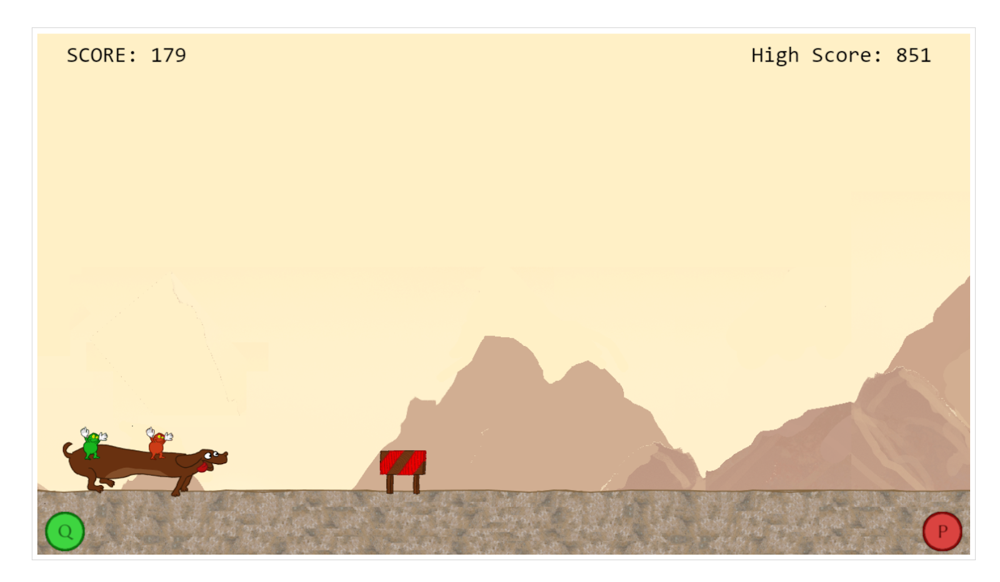
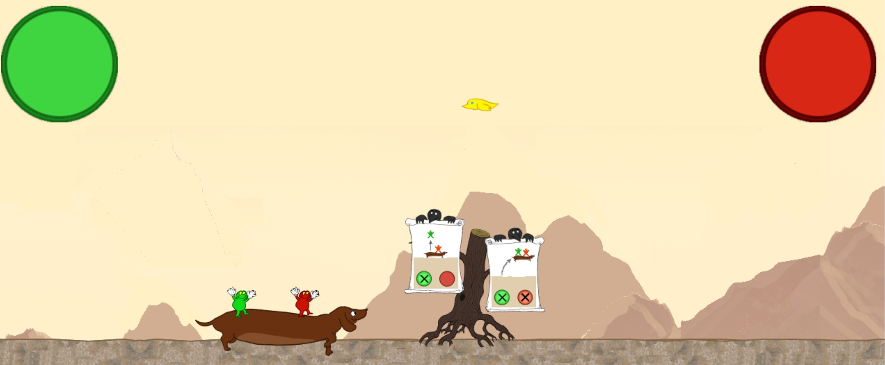

Daxtrot er basert på
en
tidligere idé av en bruker ved navn miconazole, som hun skrev om
til et spillverksted i 2010. I forarbeidet til spillet tok vi
utgangspunkt i
et idédokument som skisserte det
grunnleggende konseptet. Vi bestemte oss for å la helten i spillet
være en dachs – fordi dachser, gestaltet nesten snorrette, kan være
interessante å navigere, men selvfølgelig mest av alt fordi de er
fryktelig søte.
Vi tok utgangspunkt i et simpelt flappy bird spill fra
w3schools
som allerede hadde samme scroller-plattformer-konsept som vi så etter, og bygde videre på dette.
Så plasserte vi figuren på bakken, la til to mindre figurer på toppen av den store
og la til diverse hinder på veien.

Etter hvert fikk vi inn originale sprites (av Simen) for alle elementer slik
at det så ut som spillet vi så for oss.

I sluttprosessen har vi jobbet med å få inn en skikkelig level med mål (i stedet for en endeløs scroller),
mulighet for å endre spillerknapper, flere hindertyper, start/slutt-meny, tutorial-kråker,
og støtte for mobil.